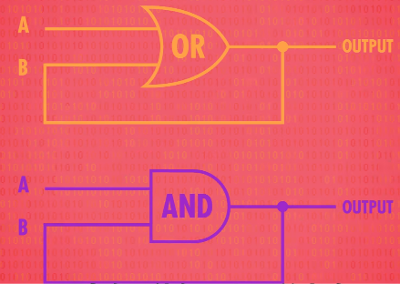
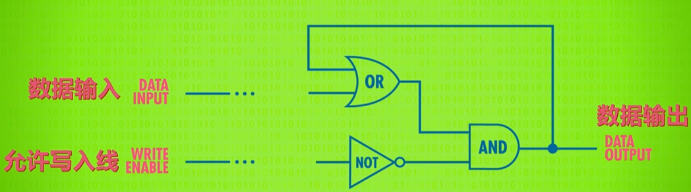
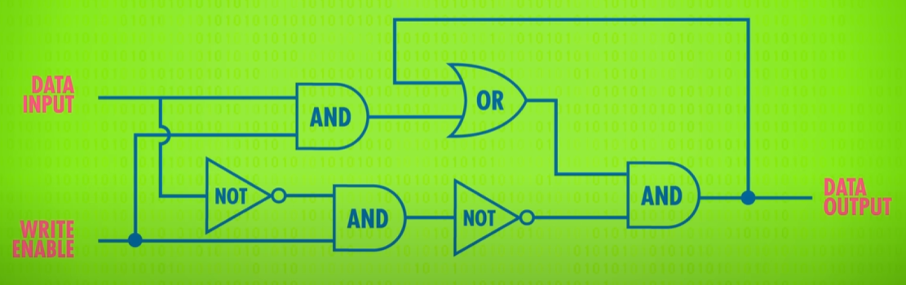
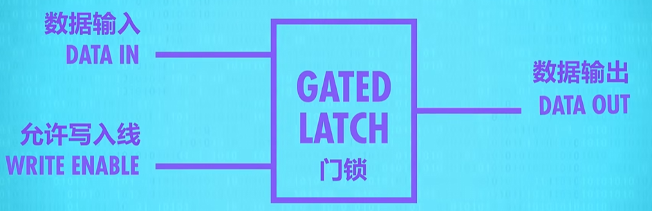
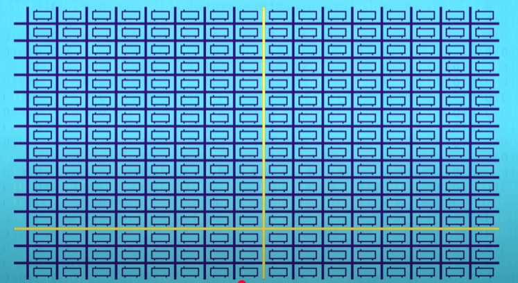
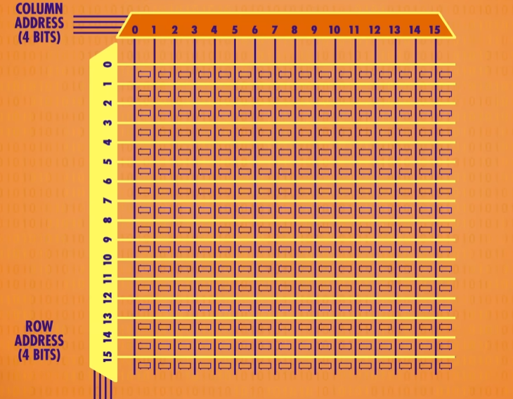
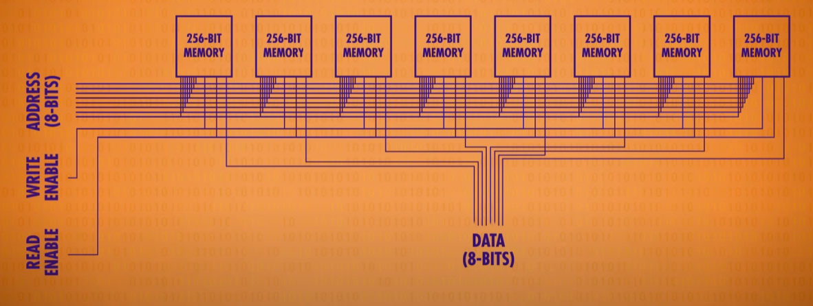
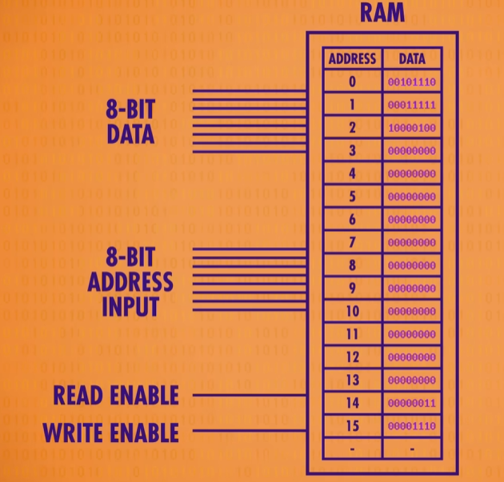

计算机的存储分为随机访问存储（RAM）和持久存储，这一节讨论的是前者，即：计算机在通电的状态下，如何存储数据
如何存储 1 bit 的数据
计算机通电后的电流都是单向流动的，所以要在通电时存储电信号，工程师对逻辑电路做了处理，让输出电信号回流到其中一个输出：

上面的两个电路分别可以存储 1 和 0，但是这还不够，毕竟它们的存储都是不可改变的，为此，逻辑电路被组合了起来：
这个电路被称为锁存器（AND-OR Latch），是因为它锁住了一个位的值，这样就真正意义上存储了 1 bit 的值！
但是使用 设置 和 复位
两条线来输入比较难以理解，易用的结构应该是下面这样的：

所以又有了这样的电路，我们称之为门锁（Gate Latch）：

之所以称为门锁，是因为它可以打开和关上，我们不必过于关心它的实现细节，所以再次抽象：

这样，我们拥有了一个真正意义上可以存储 1 bit 数据的锁存器
寄存器（Register）
我们把 8 个锁存器并成一排形成一组，这样我们就得到了一个寄存器。
寄存器能够存储一个数字，寄存器有多少位，就叫
位宽。早期的计算机使用 8 位宽的寄存器，后面 16 位、32
位、直到如今的 64 位。
想象一下，如果我们要往一个寄存器里面写值，那么我们至少需要 8 根输入线和 8 根输出线，但 “允许写入线” 可以只用一根，将 8 个锁存器全部连通。这样，当寄存器要写入数据时，把 “允许写入线” 置 1 ，八根输入线写入数据后，再将 “允许写入线” 置 0 即可。
内存
现在我们的存储规模再次提升，超过单个寄存器，存储 256 位数据，线的数量就会来到 64 + 64 + 1 = 129 根！
于是矩阵式的电路设计出现了。锁存器不再是单纯并排排布，而是网格排布，下图是存 256 位的 16x16 的锁存器布局，当我们要写入某个锁存器时，只需要同时启用对应的行线和列线：

这样，我们需要的线就变成了：
- 1 根数据线
- 1 根 “允许写入线”
- 16 行和 16 列的线用于选择锁存器
129 根线被优化为 1 + 1 + 16 + 16 = 34 根线，即使加上 “允许读取线” ，也才 35 根线
多路复用器
采用矩阵式电路设计后，我们用可以用行数加列数来表示一个锁存器的地址，比如第
12 行 8 列的锁存器地址是 11001000 。行和列分别占 4 bit
，如何把这个 4
位的值转换到电路上，就要用到多路复用器（Multiplexer）

两个多路复用器，分别用来转换行和列的地址
对内存抽象
以上的结构做一次抽象，得到下面的 256 bit 的内存：
它使用 8 位地址（4 位行和 4 位列），一条数据线，一条写入线和一条读取线
我们将 8 个 256 bit 内存并排排布，用 8 根线串联控制地址，用 2 根线串联分别控制写入和读取，再对每个内存单独用 1 根数据线（共 8 根数据线），可以实现在指定 8 位地址存储一个 8 位数字：

对这个电路再次做抽象，我们就得到了一个可寻址的内存，由于地址最多有 256 个，所以我们最多可以存储 256 个 8 位值：

由于可以随时访问任意位置，这样的内存被叫做 RAM (Random Access Memory，随机访问存储器)。现代的内存条可以达到几十 GB 容量，归根结底就是排布了大量类似这样的内存电路。